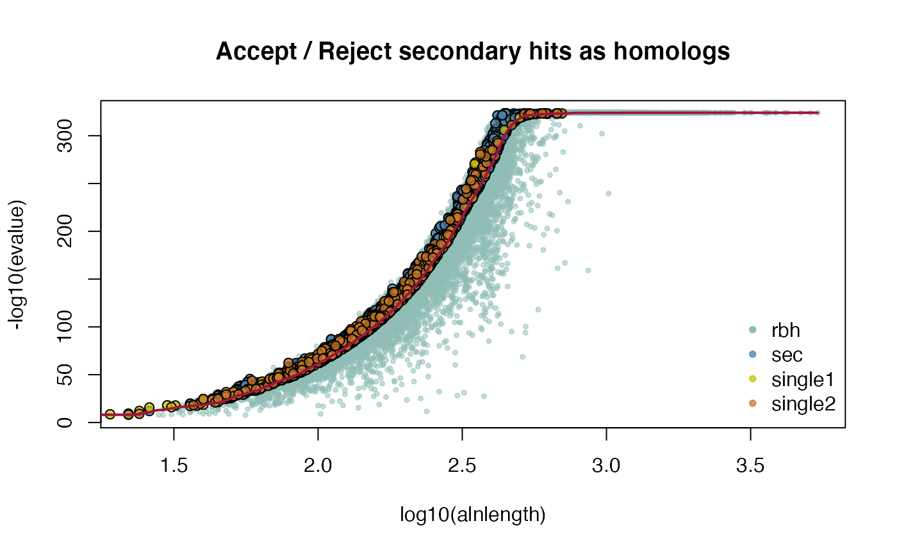
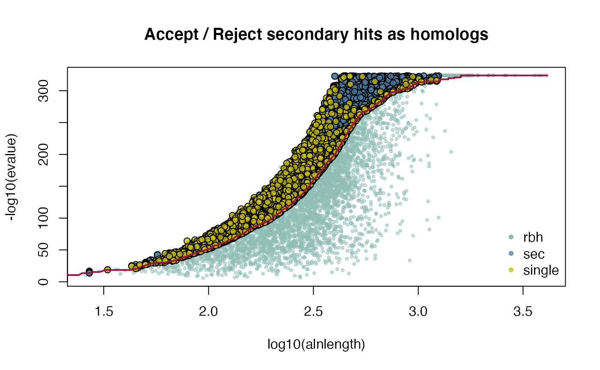
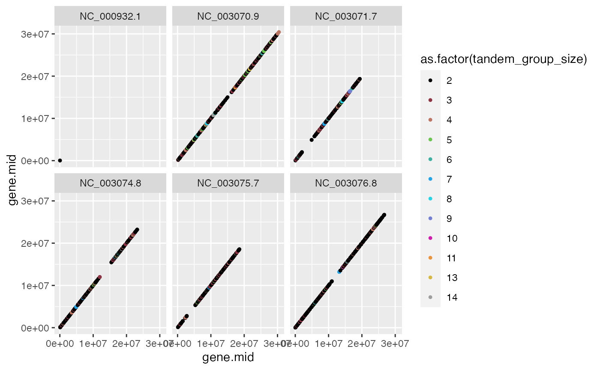
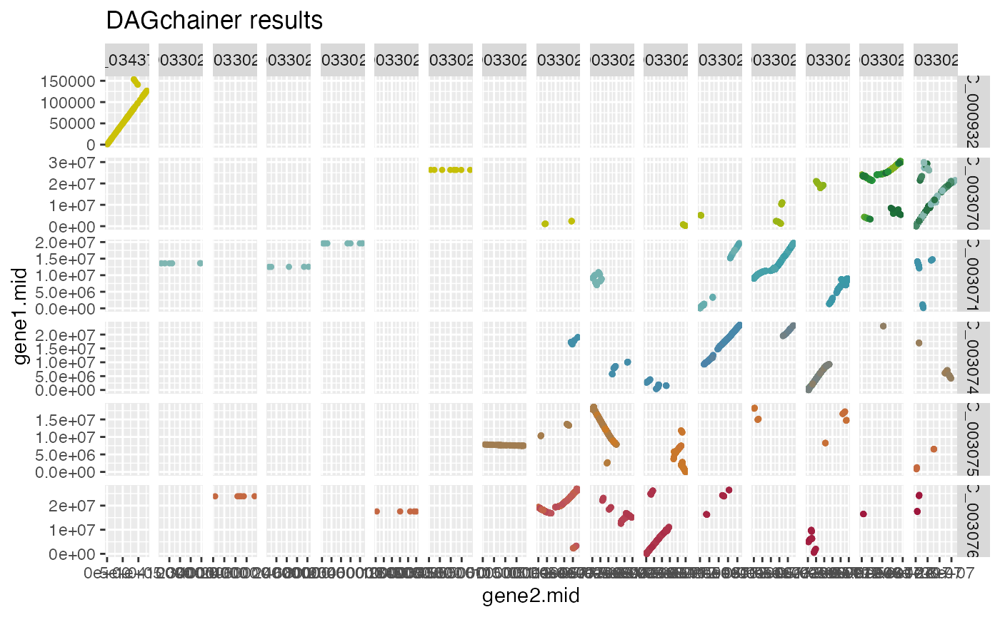
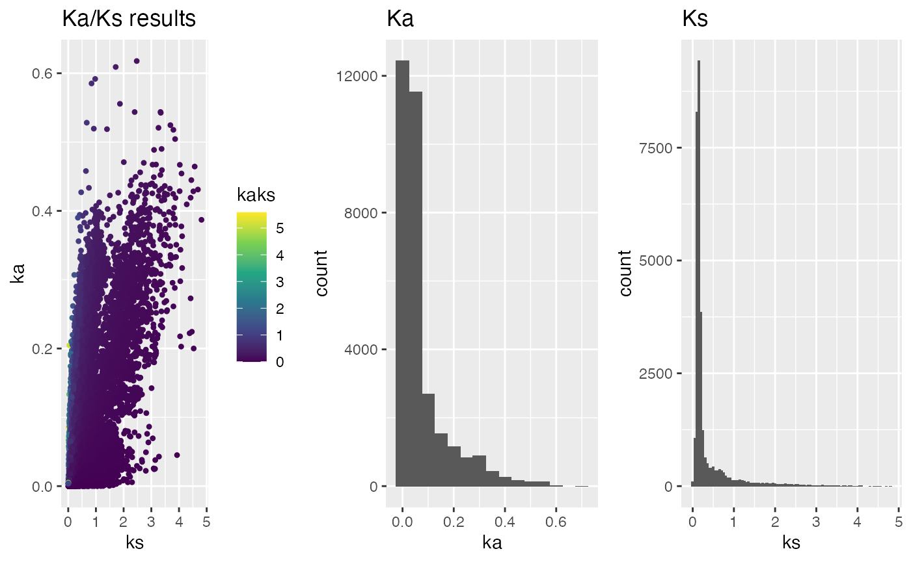

KaKs Vignette
Kristian K Ullrich
2020-10-31
Source:vignettes/V02KaKsVignette.Rmd
V02KaKsVignette.RmdKa/Ks Vignette
- includes A. thalina and A. lyrata CRBHit pair calculation
- includes H. sapiens and P. troglodytes CRBHit pair calculation
- inlcudes Longest Isoform selection
- includes Gene/Isoform chromosomal position extraction
- includes Tandem Duplicate Assignment
- includes Ka/Ks colored Dot-Plot
Table of Contents
- Conditional Reciprocal Best Hit pairs (CRBH pairs)
- Ka/Ks Calculation
- Ka/Ks Filtering and Visualisation
- Homo sapiens vs. Pan troglodytes example
- References
This vignette is supposed to explain in more detail Ka/Ks calculation and it’s downstream filtering and visualization. The Ka/Ks ratio was originally developed for the analysis of genetic sequences from divergent species (Kimura (1977), Yang and Nielson (2000)). In short, the Ka/Ks ratio quantifies the mode and strength of selection by comparing synonymous substitution rates (Ks) (assumed to be evolutionary neutral) with nonsynonymous rates (Ka), which are exposed to selection as they change the amino acid composition of a protein (Mugal et al (2014)).
CRBHits is a reimplementation of the Conditional Reciprocal Best Hit (CRBH) algorithm crb-blast in R. The CRBHit pairs can be directly used to calculate Ka/Ks ratios and to filter for tandem duplicates or syntenic groups.
See the R package page for a detailed description of the install process and its dependencies https://mpievolbio-it.pages.gwdg.de/crbhits/ or have a look at the CRBHits Basic Vignette.
Note:
In this Vignette the lastpath is defined as vignette.paths[1] and the kakscalcpath as vignette.paths[2] to be able to build the Vignette.
However, once you have compiled last-1133 and KaKs_Calculator2.0 with the functions make.last() and make.KaKs_Calculator2() you won’t need to specify the paths anymore. Please remove them if you would like to repeat the examples.
#load vignette specific libraries library(CRBHits) suppressPackageStartupMessages(library(Biostrings)) suppressPackageStartupMessages(library(tidyverse)) suppressPackageStartupMessages(library(curl)) #compile LAST and KaKs_Calculator2.0 for the vignette vignette.paths <- make.vignette()
1. Conditional reciprocal best hit pairs
The CRBH algorithm builds upon the classical reciprocal best hit (RBH) approach to find orthologous sequences between two sets of sequences by defining an expect-value cutoff per alignment length. Further, this cutoff is used to retain secondary hits as additional bona-fide homologues.
See the R package page and the CRBHits Basic Vignette for a more detailed description of the CRBH algorithm.
1.1. Download Coding sequences (CDS) from NCBI and ENSEMBL
To calculate CRBHit pairs between two species, one can directly use an URL to access the coding sequences and calculate the CRBH pairs matrix.
Two examples are given in this vignette.
The first example compares the coding sequences from Arabidopsis thaliana and Arabidopsis lyrata. The input sequences are from the FTP server from NCBI Genomes.
The second example compares the CDS from Homo sapiens and Pan troglodytes (see Homo sapiens vs. Pan troglodytes example).
As an alternative the EnsemblPlants release-48 can used.
##set URLs for Arabidopis thaliana and Arabidopsis lyrata from NCBI Genomes #set NCBI URL NCBI <- "https://ftp.ncbi.nlm.nih.gov/genomes/all/" #set Arabidopsis thaliana CDS URL ARATHA.cds.url <- paste0(NCBI, "GCF/000/001/735/GCF_000001735.4_TAIR10.1/", "GCF_000001735.4_TAIR10.1_cds_from_genomic.fna.gz") #set Arabidopsis lyrata CDS URL ARALYR.cds.url <- paste0(NCBI, "GCF/000/004/255/GCF_000004255.2_v.1.0/", "GCF_000004255.2_v.1.0_cds_from_genomic.fna.gz") #get Arabidopsis thaliana CDS ARATHA.cds <- Biostrings::readDNAStringSet(ARATHA.cds.url) #get Arabidopsis lyrata CDS ARALYR.cds <- Biostrings::readDNAStringSet(ARALYR.cds.url)
1.2. Get Longest Isoform from NCBI or ENSEMBL Input
Prior CRBHit pairs calculation, the longest isoforms can be selected, if the data was downloaded from NCBI or Ensembl.
Note: This is an important step. If e.g. isoforms are used, the Ka/Ks calculations might show biased values inspecting mean or median Ka/Ks values grouped per query sequence.
##get longest isoforms #get longest isoform ARATHA.cds.longest <- isoform2longest(ARATHA.cds, "NCBI") ARALYR.cds.longest <- isoform2longest(ARALYR.cds, "NCBI") #get help ?cds2longest
1.3. Calculate/Filter CRBHit pairs
The blast-like software LAST is used to compare the translated CDS against each other and output a blast-like output table including the query and target length.
The hit pairs are filtered prior fitting for a query coverage of 50% and the twilight zone of protein sequence alignments (Rost B. (1999)).
The CRBhit pairs can be calculated directly from the URLs with the function cdsfile2rbh() using multiple threads including longest isoform selection.
For a detailed description of the cdsfile2rbh() function and the cds2rbh() function with its individual filtering steps prior CRBH algorithm fitting see the CRBHits Basic Vignette.
##calculate CRBHit pairs for A. thaliana and A. lyrata using 2 threads #input from CDS obtained from NCBI #longest isoform selection #query coverage >= 50% #rost199 filter ARATHA_ARALYR_crbh <- cds2rbh(ARATHA.cds, ARALYR.cds, qcov = 0.5, rost1999 = TRUE, longest.isoform = TRUE, isoform.source = "NCBI", threads = 2, plotCurve = TRUE, lastpath = vignette.paths[1])

#get help ?cds2rbh1.4. Extract Gene/Isoform chromosomal position
To be able to filter for Tandem Duplicates and to plot a dotplot, one needs to have annotated gene positions per chromosome/contig. With the cds2genepos() function it is possible to directly access this information if the data was obtained from NCBI or Ensembl.
Chromosomal gene positions might overlap and if one has not filtered to use the longest or primary isoform there will be positions overlap for CDS. To overcome this issue it is recommended to first reduce the CDS Input to the longest isoform (see Get Longest Isoform from NCBI or ENSEMBL Input).
Note: It is also possible to obtain and define chromosomal gene positions from other sources, like parsing a GTF/GFF file and supply a manual curated genepos matrix. In the same way this process might be used to select the longest/primary isoform from CDS Input sources other than NCBI or Ensembl. This special case is handled here:
1.4.1. Get gene position from NCBI or ENSEMBL Input
If the CDS Input was obtained from NCBI or ENSEMBL, the gene position can be directly extracted from the DNAStringSet as follows.
##get gene position idx from NCBI CDS #extract gene position from CDS ARATHA.cds.genepos <- cds2genepos(ARATHA.cds, source = "NCBI") #extract gene position from longest isoform CDS ARATHA.cds.longest.genepos <- cds2genepos(ARATHA.cds.longest, source = "NCBI") #show first entries head(ARATHA.cds.genepos) #> gene.seq.id gene.chr gene.start gene.end #> 1 lcl|NC_000932.1_cds_NP_051039.1_48182 NC_000932.1 383 1444 #> 2 lcl|NC_000932.1_cds_NP_051040.2_48183 NC_000932.1 2056 3570 #> 3 lcl|NC_000932.1_cds_NP_051041.1_48184 NC_000932.1 5084 6188 #> 4 lcl|NC_000932.1_cds_NP_051042.1_48185 NC_000932.1 7017 7202 #> 5 lcl|NC_000932.1_cds_NP_051043.1_48186 NC_000932.1 7583 7693 #> 6 lcl|NC_000932.1_cds_NP_051044.1_48187 NC_000932.1 9938 11461 #> gene.mid gene.strand gene.idx #> 1 913.5 -1 1 #> 2 2813.0 -1 2 #> 3 5636.0 -1 3 #> 4 7109.5 1 4 #> 5 7638.0 1 5 #> 6 10699.5 -1 6 head(ARATHA.cds.longest.genepos) #> gene.seq.id gene.chr gene.start gene.end #> 1 lcl|NC_000932.1_cds_NP_051039.1_48182 NC_000932.1 383 1444 #> 2 lcl|NC_000932.1_cds_NP_051040.2_48183 NC_000932.1 2056 3570 #> 3 lcl|NC_000932.1_cds_NP_051041.1_48184 NC_000932.1 5084 6188 #> 4 lcl|NC_000932.1_cds_NP_051042.1_48185 NC_000932.1 7017 7202 #> 5 lcl|NC_000932.1_cds_NP_051043.1_48186 NC_000932.1 7583 7693 #> 6 lcl|NC_000932.1_cds_NP_051044.1_48187 NC_000932.1 9938 11461 #> gene.mid gene.strand gene.idx #> 1 913.5 -1 1 #> 2 2813.0 -1 2 #> 3 5636.0 -1 3 #> 4 7109.5 1 4 #> 5 7638.0 1 5 #> 6 10699.5 -1 6 #get number of gene isoforms with same index table(table(ARATHA.cds.genepos$gene.idx)) #> #> 1 2 3 4 5 6 7 8 9 10 11 12 15 #> 29602 5062 1441 495 197 86 40 18 16 5 6 3 1 table(table(ARATHA.cds.longest.genepos$gene.idx)) #> #> 1 #> 27562 #get help ?cds2genepos
1.4.2. Use GTF/GFF3 file to obtain gene position
As noted above, it is also possible to obtain gene position and corresponding the longest isoforms per gene annotated in a GTF/GFF3 file.
see GTF/GFF3 format
Note: In some cases the IDs provided in the CDS and the GTF/GFF3 file differ, which make it more complicated to directly link gene position and CDS.
Here, as an example, the GFF3 file for the species Arabidopsis thaliana is obtained from the FTP server from Ensembl Plants.
Note: The GFF3 and GTF files can be very large and it might take some time until this data is loaded into memory.
##get gene position idx from GTF/GFF3 #set NCBI URL ensemblPlants <- "ftp://ftp.ensemblgenomes.org/pub/plants/release-48/" #set Arabidopsis thaliana GFF3 URL ARATHA.GFF.url <- paste0(ensemblPlants, "gff3/arabidopsis_thaliana/", "Arabidopsis_thaliana.TAIR10.48.gff3.gz") #downlaod and gunzip file ARATHA.GFF.file <- tempfile() ARATHA.GFF.file.gz <- paste0(ARATHA.GFF.file, ".gz") download.file(ARATHA.GFF.url, ARATHA.GFF.file.gz, quiet = FALSE) system(paste0("gunzip -f ", ARATHA.GFF.file.gz)) #read ARATHA.GFF.file ARATHA.gff <- read.table(ARATHA.GFF.file, sep = "\t", quote = "", header = FALSE) colnames(ARATHA.gff) <- c("seqname", "source", "feature", "start", "end", "score", "strand", "frame", "attribute") #extract gene ARATHA.gff.gene <- ARATHA.gff %>% dplyr::filter(feature == "gene") #get gene ID ARATHA.gff.gene.id <- gsub("ID\\=", "", stringr::word(ARATHA.gff.gene$attribute, 1, sep=";")) #extract mRNA ARATHA.gff.mRNA <- ARATHA.gff %>% dplyr::filter(feature == "mRNA") #get mRNA ID ARATHA.gff.mRNA.id <- gsub("ID\\=", "", stringr::word(ARATHA.gff.mRNA$attribute, 1, sep=";")) #get mRNA based gene ID ARATHA.gff.mRNA.parent.id <- gsub("Parent\\=", "", stringr::word(ARATHA.gff.mRNA$attribute, 2, sep=";")) #add mRNA ID and mRNA based gene ID ARATHA.gff.mRNA <- ARATHA.gff.mRNA %>% dplyr::mutate(gene.id = ARATHA.gff.mRNA.parent.id, mRNA.id = ARATHA.gff.mRNA.id) #extract CDS ARATHA.gff.CDS <- ARATHA.gff %>% dplyr::filter(feature == "CDS") #get CDS based mRNA ID ARATHA.gff.CDS.parent.id <- gsub("Parent\\=", "", stringr::word(ARATHA.gff.CDS$attribute, 2, sep=";")) #add CDS based mRNA ID ARATHA.gff.CDS <- ARATHA.gff.CDS %>% dplyr::mutate(mRNA.id = ARATHA.gff.CDS.parent.id) #get width per mRNA isoform ARATHA.gff.mRNA.len <- ARATHA.gff.CDS %>% dplyr::group_by(mRNA.id) %>% dplyr::summarise(mRNA.id = unique(mRNA.id), len = sum(end-start)) #> `summarise()` ungrouping output (override with `.groups` argument) #add mRNA isoform width ARATHA.gff.mRNA <- ARATHA.gff.mRNA %>% dplyr::mutate(mRNA.len = ARATHA.gff.mRNA.len$len[ match(ARATHA.gff.mRNA$mRNA.id, ARATHA.gff.mRNA.len$mRNA.id)]) #retain only longest mRNA isoform ARATHA.gff.mRNA.longest <- ARATHA.gff.mRNA %>% dplyr::arrange(seqname, start, gene.id, desc(mRNA.len)) %>% dplyr::distinct(gene.id, .keep_all = TRUE) %>% dplyr::mutate(gene.mid = (start+end)/2) #add gene idx ARATHA.gff.mRNA.longest <- ARATHA.gff.mRNA.longest %>% dplyr::mutate(gene.idx = seq(from = 1, to = dim(ARATHA.gff.mRNA.longest)[1])) #create gene position matrix to be used for downstream analysis ARATHA.gff.genepos <- ARATHA.gff.mRNA.longest %>% dplyr::select( gene.seq.id = mRNA.id, gene.chr = seqname, gene.start = start, gene.end = end, gene.mid = gene.mid, gene.strand = strand, gene.idx = gene.idx) #set attribute attr(ARATHA.gff.genepos, "CRBHits.class") <- "genepos" #show first entries of generated gene position head(ARATHA.gff.genepos) #> gene.seq.id gene.chr gene.start gene.end gene.mid gene.strand #> 1 transcript:AT1G01010.1 1 3631 5899 4765.0 + #> 2 transcript:AT1G01020.1 1 6788 9130 7959.0 - #> 3 transcript:AT1G01030.1 1 11649 13714 12681.5 - #> 4 transcript:AT1G01040.1 1 23121 31227 27174.0 + #> 5 transcript:AT1G01050.1 1 31170 33171 32170.5 - #> 6 transcript:AT1G01060.6 1 33365 37871 35618.0 - #> gene.idx #> 1 1 #> 2 2 #> 3 3 #> 4 4 #> 5 5 #> 6 6
1.5 Assign Tandem Duplicates
Tandem duplicated genes (gene family members that are tightly clustered on a chromosome) are common in plant genomes and can show different Ka/Ks distribution than non tandem duplicates or other segmental duplicated genes (Rizzon et al., 2006).
In order to account for this, it is possible to classify these tandem duplicates with the tandemdups() function.
Note: To be able to classify tandem duplicated genes within one genome, one needs to calculate selfblast based CRBHit pairs and provide gene position information for the same input data.
The following example shows how one can:
- get selfblast CRBHit pairs
- get gene positions
- assign tandem duplicates
##example to assign tandem duplicates given selfblast CRBHit pairs and gene position #get selfblast CRBHit pairs for A. thaliana ARATHA_selfblast_crbh <- cds2rbh(ARATHA.cds, ARATHA.cds, qcov = 0.5, rost1999 = TRUE, longest.isoform = TRUE, isoform.source = "NCBI", threads = 2, plotCurve = TRUE, lastpath = vignette.paths[1])

#get selfblast CRBHit pairs for A. lyrata ARALYR_selfblast_crbh <- cds2rbh(ARALYR.cds, ARALYR.cds, qcov = 0.5, rost1999 = TRUE, longest.isoform = TRUE, isoform.source = "NCBI", threads = 2, plotCurve = TRUE, lastpath = vignette.paths[1])

#get gene position for A. thaliana longest isoforms ARATHA.cds.longest.genepos <- cds2genepos(ARATHA.cds.longest, source = "NCBI") #get gene position for A. lyrata longest isoforms ARALYR.cds.longest.genepos <- cds2genepos(ARALYR.cds.longest, source = "NCBI") #assign tandem duplicates for A. thaliana ARATHA.cds.longest.tandemdups <- tandemdups(ARATHA_selfblast_crbh, ARATHA.cds.longest.genepos, dupdist = 5) #assign tandem duplicates for A. lyrata ARALYR.cds.longest.tandemdups <- tandemdups(ARALYR_selfblast_crbh, ARALYR.cds.longest.genepos, dupdist = 5) #get help ?tandemdups
The resulting tandem duplicated genes detected can be plotted given their chromosomal gene position as follows:
##example how to plot tandem duplicated gene groups #get tandem group size tandem_group_size <- ARATHA.cds.longest.tandemdups %>% dplyr::group_by(tandem_group) %>% dplyr::group_size() table(tandem_group_size) #> tandem_group_size #> 2 3 4 5 6 7 8 9 10 11 13 14 #> 1051 169 54 28 12 6 3 1 1 1 1 1 #use dplyr::mutate to assign group size ARATHA.cds.longest.tandemdups <- ARATHA.cds.longest.tandemdups %>% dplyr::mutate(tandem_group_size = unlist(apply(cbind(tandem_group_size, tandem_group_size), 1, function(x) rep(x[1], x[2])))) #use dplyr::group_by to plot group by chromosome and colored by group size ARATHA.cds.longest.tandemdups %>% dplyr::group_by(gene.chr) %>% ggplot2::ggplot(aes(x = gene.mid, y = gene.mid)) + ggplot2::geom_point(shape = 20, aes(col = as.factor(tandem_group_size))) + ggplot2::facet_wrap(~ gene.chr) + ggplot2::scale_colour_manual(values = CRBHitsColors(12))

1.6 Synteny with DAGchainer
Chains of collinear gene pairs can represent segmentally duplicated regions and genes within a single genome or syntenic regions between related genomes (Haas et al., 2004).
There exists external tools which can be used to infer syntenic regions, like e.g. SynMap as published by Haug-Baltzell A. et al., 2017.
Within CRBHits the tool DAGchainer published by Haas et al., 2004 can be directly applied on the CRBHit pairs.
The following example shows how one can run DAGchainer on CRBHit pairs and gene positions to get syntenic information about the CRBHit pairs.
##example how to run DAGchainer on CRBHit pairs and gene positions #DAGchainer using gene base pair (gene bp start end) #Note: change parameter to fit bp option ARATHA_ARALYR_crbh.dagchainer.bp <- rbh2dagchainer(rbhpairs = ARATHA_ARALYR_crbh, gene.position.cds1 = ARATHA.cds.longest.genepos, gene.position.cds2 = ARALYR.cds.longest.genepos, type = "bp", gap_length = 10000, max_dist_allowed = 200000, dagchainerpath = vignette.paths[3]) #DAGchainer using gene index (gene order) ARATHA_ARALYR_crbh.dagchainer.idx <- rbh2dagchainer(rbhpairs = ARATHA_ARALYR_crbh, gene.position.cds1 = ARATHA.cds.longest.genepos, gene.position.cds2 = ARALYR.cds.longest.genepos, type = "idx", gap_length = 1, max_dist_allowed = 20, dagchainerpath = vignette.paths[3])
##example how to plot pairwise chromosomal syntenic groups (DAGchainer results) #plot DAGchainer results for each chromosome combination plot.dagchainer(ARATHA_ARALYR_crbh.dagchainer.bp)

2. Ka/Ks Calculation
model = “Li”
ARATHA.cds <- Biostrings::readDNAStringSet(paste0(ensemblPlants, ARATHA.CDS.file))
ARALYR.cds <- Biostrings::readDNAStringSet(paste0(ensemblPlants, ARALYR.CDS.file))
ARATHA_ARALYR_crbh.kaks.Li <- rbh2kaks(ARATHA_ARALYR_crbh$crbh.pairs,
ARATHA.cds, ARALYR.cds, model = "Li",
threads = 4)model = “YN”
HOMSAP_PANTRO_crbh.kaks.YN <- rbh2kaks(HOMSAP_PANTRO_crbh$crbh.pairs,
HOMSAP.cds, PANTRO.cds, model = "YN",
threads = 8)3. Ka/Ks Filtering and Visualisation
In some cases the Ka/Ks calculation fails, since e.g. there are no synonymous (Ks) or nonsynonymous substitutions (Ka) between cds1 and cds2 or one wants to get rid of high Ks values due to substitution saturation. One can easily remove these cases before doing further analysis.
#remove all values that are negative for either ka or ks
ath_aly_crbh.kaks.Li.red <- ath_aly_crbh.kaks.Li %>%
subset(ka != 9.999999) %>% subset(ks != 9.999999)4. Homo sapiens vs. Pan troglodytes example
The second example compares the CDS from Homo sapiens and Pan troglodytes. The input sequences are from the FTP server from Ensembl.
The Ensembl release-101 is used.
###example comparing Homo sapiens and Pan troglodytes ##set URLs for Homo sapiens and Pan troglodytes from Ensembl #set Ensembl URL ensembl <- "ftp://ftp.ensembl.org/pub/release-101/fasta/" #set Homo sapiens CDS URL HOMSAP.cds.url <- paste0(ensembl, "homo_sapiens/cds/Homo_sapiens.GRCh38.cds.all.fa.gz") #set Pan troglodytes CDS URL PANTRO.cds.url <- paste0(ensembl, "pan_troglodytes/cds/Pan_troglodytes.Pan_tro_3.0.cds.all.fa.gz") #get Homo sapiens CDS HOMSAP.cds.file <- tempfile() download.file(HOMSAP.cds.url, HOMSAP.cds.file, quiet = FALSE) HOMSAP.cds <- Biostrings::readDNAStringSet(HOMSAP.cds.file) #get Pan troglodytes CDS PANTRO.cds.file <- tempfile() download.file(PANTRO.cds.url, PANTRO.cds.file, quiet = FALSE) PANTRO.cds <- Biostrings::readDNAStringSet(PANTRO.cds.file) #get longest isoform HOMSAP.cds.longest <- isoform2longest(HOMSAP.cds, "ENSEMBL") PANTRO.cds.longest <- isoform2longest(PANTRO.cds, "ENSEMBL") ##calculate CRBHit pairs for H. sapiens and P. troglodytes using 2 threads #input from CDS obtained from Ensembl #longest isoform selection #query coverage >= 50% #rost199 filter HOMSAP_PANTRO_crbh <- cds2rbh(HOMSAP.cds, PANTRO.cds, qcov = 0.5, rost1999 = TRUE, longest.isoform = TRUE, isoform.source = "ENSEMBL", threads = 2, plotCurve = TRUE, lastpath = vignette.paths[1])

HOMSAP.cds <- Biostrings::readDNAStringSet(paste0(ensembl, HOMSAP.CDS.file))
PANTRO.cds <- Biostrings::readDNAStringSet(paste0(ensembl, PANTRO.CDS.file))
HOMSAP_PANTRO_crbh.kaks.Li <- rbh2kaks(HOMSAP_PANTRO_crbh$crbh.pairs,
HOMSAP.cds, PANTRO.cds, model = "Li",
threads = 4)5. References
Aubry S., Kelly S., Kümpers B. M., Smith-Unna R. D., and Hibberd J. M. (2014). Deep evolutionary comparison of gene expression identifies parallel recruitment of trans-factors in two independent origins of C4 photosynthesis. PLoS genetics, 10(6). https://doi.org/10.1371/journal.pgen.1004365
Charif D., and Lobry J. R. (2007). SeqinR 1.0-2: a contributed package to the R project for statistical computing devoted to biological sequences retrieval and analysis. In Structural approaches to sequence evolution (pp. 207-232). Springer, Berlin, Heidelberg. https://link.springer.com/chapter/10.1007/978-3-540-35306-5_10
Haas B. J., Delcher A. L., Wortman J. R., and Salzberg S. L. (2004). DAGchainer: a tool for mining segmental genome duplications and synteny. Bioinformatics, 20(18). https://doi.org/10.1093/bioinformatics/bth397
Haug-Baltzell A., Stephens S. A., Davey S., Scheidegger C. E., Lyons E. (2017). SynMap2 and SynMap3D: web-based wholge-genome synteny browsers. Bioinformatics, 33(14). https://academic.oup.com/bioinformatics/article/33/14/2197/3072872
Kiełbasa S. M., Wan R., Sato K., Horton P., and Frith M. C. (2011). Adaptive seeds tame genomic sequence comparison. Genome research, 21(3), 487-493. https://doi.org/10.1101/gr.113985.110
Kimura M. (1977). Preponderance of synonymous changes as evidence for the neutral theory of molecular evolution. Nature, 267, 275-276.
Li W. H. (1993). Unbiased estimation of the rates of synonymous and nonsynonymous substitution. Journal of molecular evolution, 36(1), 96-99. https://doi.org/10.1007/bf02407308
Microsoft, and Weston S. (2020). foreach: Provides Foreach Looping Construct. R package version, 1.5.1. foreach
Mugal C. F., Wolf J. B. W., Kaj I. (2014). Why Time Matters: Codon Evolution and the Temproal Dynamics of dN/dS. Molecular Biology and Evolution, 31(1), 212-231.
Ooms J. (2019). curl: A Modern and Flexible Web Client for R. R package version, 4.3. curl
Pagès H., Aboyoun P., Gentleman R., and DebRoy S. (2017). Biostrings: Efficient manipulation of biological strings. R package version, 2.56.0. Biostrings
Revolution Analytics, and Weston S. (2020). doMC: Foreach Parallel Adaptor for ‘parallel’. R package version, 1.3.7. doMC
Rost B. (1999). Twilight zone of protein sequence alignments. Protein engineering, 12(2), 85-94. https://doi.org/10.1093/protein/12.2.85
Scott C. (2017). shmlast: an improved implementation of conditional reciprocal best hits with LAST and Python. Journal of Open Source Software, 2(9), 142. https://joss.theoj.org/papers/10.21105/joss.00142
Scrucca L., Fop M., Murphy T. B., and Raftery A. E. (2016) mclust 5: clustering, classification and density estimation using Gaussian finite mixture models. The R Journal, 8(1), 289-317. https://www.ncbi.nlm.nih.gov/pmc/articles/PMC5096736/
Duong T., and Wand M. (2015). feature: Local Inferential Feature Significance for Multivariate Kernel Density Estimation. R package version 1.2.13. https://cran.r-project.org/web/packages/feature/
Wickham H. (2011). testthat: Get Started with Testing. The R Journal, 3(1), 5. testthat
Wickham H. (2019). stringr: Simple, Consistent Wrappers for Common String Operations. R package version, 1.4.0. stringr
Wickham H. (2020). tidyr: Tidy Messy Data. R package version, 1.1.2. tidyr
Wickham H., Hester J., and Chang W. (2020). devtools: Tools to make Developing R Packages Easier. R package version, (2.3.2). devtools
Wickham H., François R., Henry L., and Müller K. (2020). dplyr: A Grammar of Data Manipulation. R package version, 1.0.2. dplyr
Yang Z., and Nielsen R. (2000). Estimating synonymous and nonsynonymous substitution rates under realistic evolutionary models. Molecular biology and evolution, 17(1), 32-43. https://doi.org/10.1093/oxfordjournals.molbev.a026236